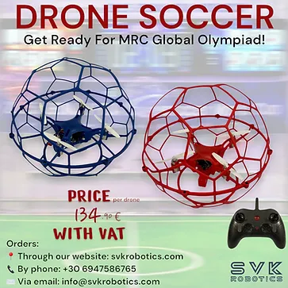
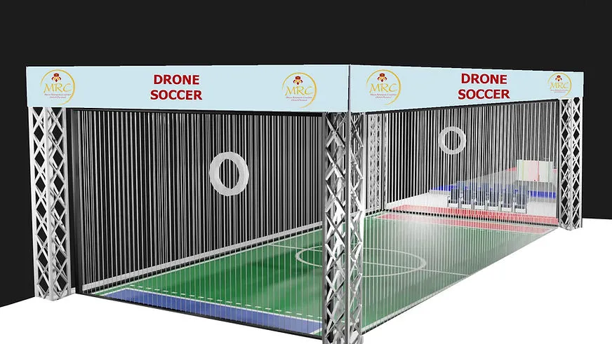
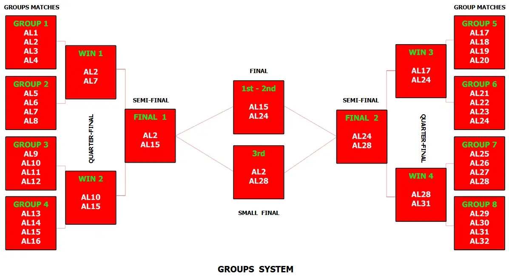
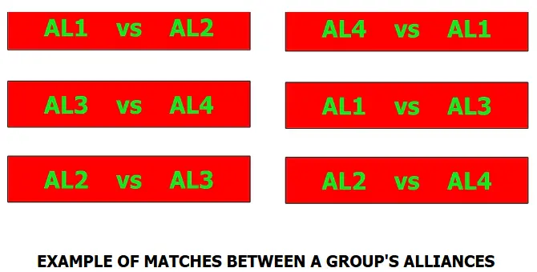

DRONE SOCCER (無人機足球)
希臘官方原文規則（English）中文賽事規則
Here is the Traditional Chinese translation of the document, structured clearly with maintained markdown formatting and image placeholders:
---
無人機足球 原始內容 (drone-soccer)
規則內容
3x3 無人機足球 (DRONE SOCCER 3x3)
年齡組別
兒童組 (KIDS)：10 至 12 歲 / 國小學生
青少年 / 高級組 (TEENS / SENIOR)：12 歲以上至 18 歲 / 國中與高中生
成人組 (ADULTS)：18 歲以上 / 大專院校學生及社會人士
⚠️ 本項目僅設有一個競賽級別：
本運動項目需要使用特定型號的無人機機器人。詳細規格於規則中說明。
🚨 各年齡組別分開進行比賽。
⚠️ 零號規則 (RULE ZERO) – 零容忍與常識：
在所有體育運動中，皆適用零號規則，內容如下：
➤「如果您不確定某件事是否被允許，那它大概就是不被允許的。」
所有規則均基於常識、運動精神以及所有參賽者的安全。
任何故意曲解規則、違反規則本意，或試圖利用灰色地帶以獲取不公平優勢的行為，皆絕不姑息，並可能導致隊伍被取消比賽資格。
🎯 賽事目標
由 3 顆無人機足球組成的聯盟（聯盟：3 隊組合成 1 隊，即 3x3 足球），其目標是在對手面前盡可能攻入最多的進球。
👥 隊伍 – 教練
* 本賽事為團體賽，非個人賽。
* 每支隊伍可由二 (2) 至三 (3) 名成員組成。
* 每隊必須指定最多一 (1) 名「機器人運動員技術員」。僅技術員獲准進入等待區或比賽區域。其他隊員可在操控點後方觀看比賽。
* 隊伍可在每次上場嘗試前更換指定的技術員，以讓所有成員都有機會積極參與運動，但此非強制性。
* 所有隊員必須年滿 10 歲（相當於國小四年級或以上）。
* 隊伍教練必須年滿 20 歲。
* 為確保賽事順暢進行，教練每報名 3 支隊伍，就必須配備 1 名助理。
* 每支隊伍僅限擁有一顆無人機足球。比賽期間禁止更換無人機足球。
* 各隊之間不得共用同一顆無人機足球。
* 若隊伍的無人機足球遇到嚴重技術問題，僅可在獲得主裁判許可後進行更換。
🤝 聯盟 (ALLIANCES)
* 一個聯盟由 3 支隊伍組成。每支隊伍僅限擁有一顆無人機足球。
* 每場比賽中，由 2 個對立聯盟進行對決。
* 2027 年起，聯盟必須來自同一所學校或機構。一所學校必須有 3 支隊伍，且每支隊伍都有自己的無人機足球，才能組成聯盟參加本項目。
* 比賽期間，聯盟將被稱為「聯盟 1」、「聯盟 2」等。
* 若有隊伍在比賽當天未出席，該聯盟將以 2 支隊伍出賽。「金球無人機」角色仍為必要，因此聯盟必須以金球無人機，加上另一顆擔任後衛或前鋒的無人機足球繼續比賽。
* 若同一聯盟有 2 支隊伍未出席，對手聯盟直接獲勝。
* 若聯盟因任何原因被取消比賽資格，無論發生在比賽的哪個階段，對手聯盟皆直接獲勝。
🛸 無人機足球類別
* 比賽使用的是帶有球形防護外殼的無人機。

🛸 無人機足球規格
* 遙控器：無人機足球必須使用遙控器進行操作。
* LED 燈光：每顆無人機足球必須配備燈光，且必須能發出至少兩種顏色（紅色與藍色），以便每個聯盟擁有自己的代表色，方便裁判在比賽中輕鬆識別球員。
* 尺寸與重量：無人機足球的尺寸最大為 20cm x 20cm x 18cm（誤差 ±1cm），且重量不得超過 160 公克。
* 規格確認：為確認符合上述規格，無人機足球將進行稱重，且必須能順利放入檢查箱中。
* 檢查箱尺寸：20cm x 20cm x 18cm，公差為 ±1cm。
* 無人機足球必須能在不施加壓力的情況下放入檢查箱。
* ➤ 備用電池：隊伍必須準備至少一顆備用電池，以確保比賽順暢進行不延誤。
🧪 技術檢查
* 首次技術檢查將於比賽當天在主辦單位規定的地點和時間進行。
* 技術檢查包括依上述條件對無人機足球及遙控器進行檢查。若不符合規格，將不被允許參賽，並自動取消參賽資格。
* 在技術檢查期間，將發放聯盟於其機器人足球員上使用的「徽章」。
* 若隊伍未在初次檢查時到場，將導致該隊自動被取消比賽資格。
* 初步檢查完成後，無人機足球將獲頒其唯一的 ID 編號。
* 每場比賽前，副裁判亦會進行二次技術檢查。
* 比賽過程中，若裁判判定無人機足球違反或未達到規定規格，裁判有權立即取消其參賽資格。
🏟️ 場地規範
➤ 賽道尺寸：賽道為長方形，尺寸為 4 公尺 x 6 公尺。
賽道圍欄：出於安全考慮，賽道四周圍繞著護網。
球門：球門由兩個直徑 80 公分的圓環組成，懸掛於天花板，距離賽道牆面 60 公分。
➤ 賽道地面：賽道地面中央帶有類似足球場的劃線標記。球門區呈長方形（紅色或藍色），尺寸為 4 公尺 x 70 公分。

🏆 賽事競賽
📋 一般資訊 - 規則
🏟️ 賽制
* 賽制依各年齡組別參賽的聯盟數量決定。
* 聯盟分為 16 組。
* 每個小組的聯盟數量，以及小組內聯盟之間的對戰場數，將依參加本項目的隊伍數量調整。
* 依參賽數量，小組賽之後進入 16 強、8 強或 4 強。
* 晉級的聯盟依本頁最後的賽制圖進入後續階段。
* 組委會保留依參賽聯盟總數調整賽制的權利。
🤝 聯盟角色分工
比賽前，每個聯盟須為其三顆無人機足球指定以下三種角色之一：
* 後衛 (Defender)
* 前鋒 (Attacker)
* 金球無人機 (Golden Ball Drone)
每個聯盟必須在比賽開始前向裁判申報其角色分配。
📝 角色職責
➤ 金球無人機：只有金球無人機可以得分。唯有當此無人機足球穿過球門圓環時，才算進球得分。
➤ 後衛：後衛的職責是保護己方球門。無人機足球不得為了防守而進入自己的球門環，或停留在球門環內。第一次違規，裁判給予警告；同一顆無人機足球再次違規，將被取消該場比賽資格，聯盟在沒有後衛無人機的情況下繼續比賽。
➤ 前鋒：前鋒負責協助金球無人機進行進球。
⚽ 進球判罰
唯有當「金球無人機」完整穿過對手的球門圓環時，方算進球成功。
📊 計分方式（小組賽階段）：
* 每勝一場：得 3 分
* 每平局一場：得 1 分
* 每敗一場：得 0 分
🏟️ 小組賽晉級 16 強：
* 每個小組中積分最高的聯盟晉級 16 強。
* 若有兩個或以上的聯盟積分相同，則以所有小組賽中總進球數最多的聯盟晉級 16 強。
* 若仍平手，則以所有小組賽中失球數最少的聯盟晉級 16 強。
* 若依舊平手，將進行 PK 大賽，進球最多的聯盟晉級 16 強。
🏟️ 16 強與淘汰賽階段的計分與晉級：
* 16 強及之後的淘汰賽，比賽中進球較多的聯盟獲勝。
* 獲勝聯盟晉級下一階段，落敗聯盟淘汰。
* 淘汰賽結束時若平手，以 PK 大賽決定勝負。
* 準決賽勝方進入決賽，敗方進行季軍賽。決賽決定第 1、2 名，季軍賽決定第 3、4 名。
🏟️ PK 大賽程序：
* 每次射門前，裁判將金球無人機放在場地中央的地面，並將防守方的後衛無人機放在其球門環正下方的地面。
* 裁判發出信號後，兩顆無人機同時起飛。金球無人機嘗試射門，防守的無人機嘗試擋住球門。
* 每次射門必須在裁判發出信號後 10 秒內完成。
* 金球無人機必須在時限內完整穿過對手的球門環，才算進球。
* 任一顆無人機未起飛、金球無人機未在 10 秒內完整穿過球門環，或有違規，該次記為未進。
* 雙方各射 3 次，輪流進行，進球較多的聯盟贏得 PK 大賽。
* 3 次後仍平手則進入驟死：雙方輪流各射 1 次，直到一方進球、另一方未進為止。
🔄 技術員更換時間
同一小組的比賽之間，聯盟可以更換技術員。
⏱️ 比賽時間
* 比賽總時長為 4 分鐘。
* 不設中場休息。隊伍在整整 4 分鐘的比賽中累計進球數。
* 比賽期間時間連續計算，計時器絕不中途計停。
* 當無人機未在場上比賽時，隊伍可對其無人機足球員進行調整與修正。
* 每場比賽前，無人機足球都必須接受裁判進行的技術檢查。
⚠️🛠️ 比賽準備與限制
* 比賽開始時，無人機足球需放置於球場地面的紅色或藍色區域內（依據各聯盟的代表色而定）。
* 比賽隨裁判哨音開始。所有無人機足球必須在裁判吹哨後方可起飛。
* 若聯盟進球得分，裁判記錄分數，比賽時間不中斷。
* 進球後，得分聯盟所有仍在場上的無人機足球，必須立即回到己方的飛行區，才能再次射門。違反此規則時，對手聯盟獲得一次罰球；裁判認定因此違規而產生的進球不予計算。
* 若部分無人機足球卡在一起，裁判可指示無人機足球著陸並重新開始比賽。
* 若裁判判定無人機足球意圖故意破壞對手的無人機足球，將舉出「紅牌」。在此情況下，該無人機足球將被驅逐出場，聯盟以 2 顆無人機足球繼續比賽。裁判會要求該無人機技術員將其著陸並關閉電源，期間比賽不中斷。
* 防守方聯盟的任何無人機足球，嚴禁故意停留在球門前，或平行於球門線移動超過 3 秒。若裁判判定有此情形，該無人機足球將被驅逐出場，聯盟繼續以 2 顆無人機足球比賽。
* 裁判的判決為最終判決。對判決有異議僅能向主裁判（Head Judges）提出。質疑主裁判的最終裁決可能導致隊伍或聯盟被取消參賽資格。
🩹 無人機足球故障/損壞 (INJURY)
➤ 發生以下情況時，裁判將判定無人機足球為「故障/損壞」：
* 其零件已脫落/解體。
* 保持靜止不動（與遙控器失去連線）。
* 損壞的無人機足球將留在比賽場地的地面上，直至 4 分鐘比賽結束。隊伍可在比賽結束後維修其無人機足球，以便參加下一場賽事。
* 若某聯盟的所有無人機足球均損壞且無法繼續比賽，裁判將給予該聯盟最多 10 分鐘回到比賽。這段期間，裁判盡可能先進行下一場排定的比賽；聯盟準備好後，裁判再恢復中斷的比賽。若聯盟未能在 10 分鐘內準備好，比賽直接結束，以中斷當時的比分為最終比分。
📅 競賽流程
* 賽制說明見上方「賽制」段，下圖為賽制圖與小組內對戰範例。


小組內聯盟對戰範例
🟥 隊伍取消資格
在下列情況下，隊伍將被取消該項目的參賽資格並必須退出比賽。該隊的成績將不予計算，亦不列入賽事成績榜單中：
1. 若隊伍的無人機足球不符合競賽規則規定的要求，且隊伍拒絕進行配合修正。
2. 若任何無人機足球技術員行為不當、不尊重他人、謾罵、挑釁，或在言語及其他方面攻擊隊友或裁判。
3. 若隊伍的教練（即使只有一位）行為不當或不體面、謾罵、挑釁，或在言語及其他方面攻擊其他隊伍、隊友或裁判。
4. 上述運動規則中所列出的違規情況。
✅ 允許 / ❌ 禁止事項
✅ 允許事項：
* 在比賽之間頻繁更換電池是必要的，以確保無人機足球始終處於隨時可作戰狀態。
❌ 禁止事項：
* 對無人機足球進行任何形式的改裝。
* 使用與賽事推薦及原廠配備不同的馬達。
* 改裝遙控器。
* 上述規則中列出的禁止事項。
🏆 獲獎者
依據最終積分，每個年齡組別將頒發並宣布獲得以下名次的聯盟：
🥇 冠軍 (第 1 名)
🥈 亞軍 (第 2 名)
🥉 季軍 (第 3 名)